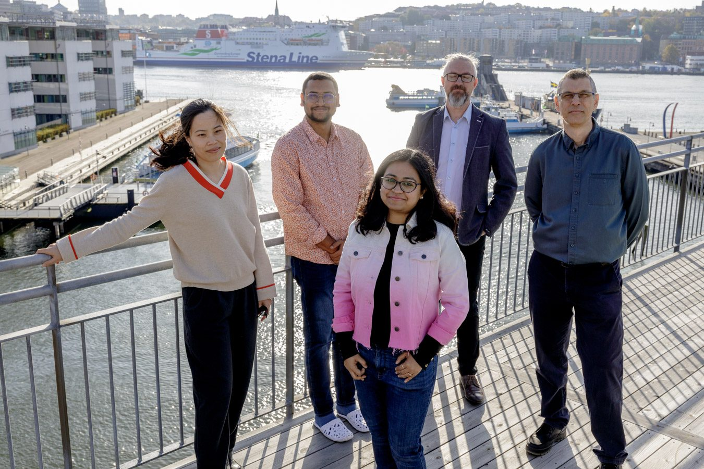

EiC Miroslaw Staron edits Information and Software Technology →
Software engineering for automotive & embedded systems
Chalmers University of Technology
University of Gothenburg
Research with industry

Research focus
The problems we work on
Four themes, each grounded in problems we study together with our industrial partners.
How we work
Research with industry, in industry
- 1
Start from a real problem
Questions come from engineers in automotive, telecom and embedded companies.
- 2
Work inside the organization
Action research and case studies, with methods and tools built and evaluated on site.
- 3
Share the results
Papers at top venues, open datasets and tools that others can build on.
People
Meet the group
Researchers and PhD students at Chalmers and the University of Gothenburg.
News & events
What's new
Publications
Recent papers
Our most recent publications. Click a title to see the authors and the link.
Datasets & software
Open artefacts
Top venues
Where we aim to publish
Software engineering journals and conferences at JUFO level 3 and/or CORE A*/A.
Journals
| Venue | JUFO | CORE |
|---|
Conferences
| Venue | JUFO | CORE |
|---|
Rankings change: check the JUFO portal and the CORE portal.
Interested in working with us?
We collaborate with industry on research projects, master's theses and PhD studies. Get in touch with Miroslaw Staron.